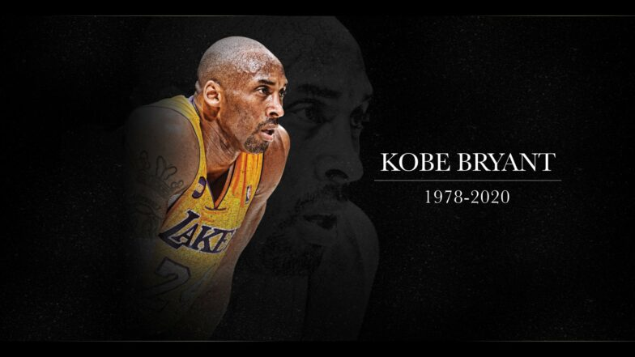
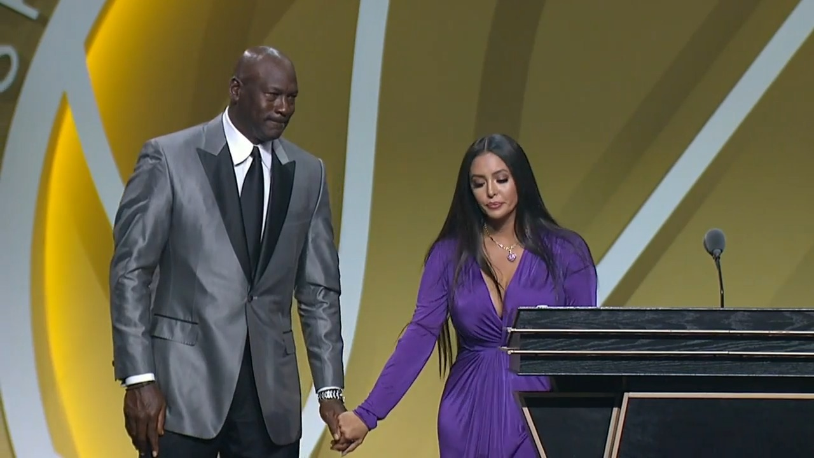

1 / 3

Rest in Peace Black Mamba.
2 / 3

Vanessa Bryant Speaks for Kobe Bryant at the Hall of Fame.
3 / 3

We miss you Kobe!
Image Credits: NBA, News Block & CNBC (in respective order)
On this website, the legacy and legendary career of Kobe Bean Bryant will be remembered. Kobe Bryant was born in Philadelphia from former NBA player Joe "Jelly Bean" Bryant, who also played in Italy, where Kobe would go to school. Coming back to the United States, Kobe would show his high aptitude for the game by breaking the record in Pennsylvania of scoring by obtaining 2,883 points. Kobe would choose to skip college and go straight to the NBA, being drafted by the Charlotte Hornets in the 1996 NBA Draft as the 13th pick, but then traded to the Lakers where his historic career would begin. For more information, read the link here.